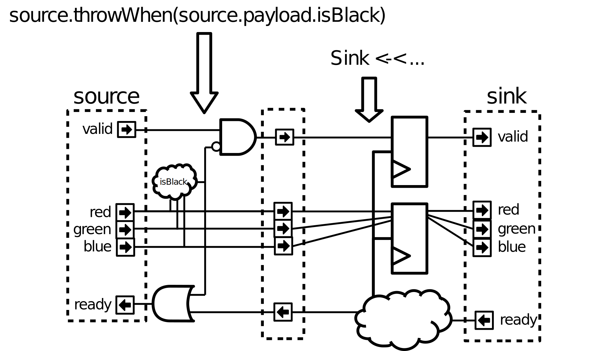

Stream
规范
信号 |
类型 |
驱动 |
描述 |
何时忽略 |
|---|---|---|---|---|
valid |
Bool |
Master |
当为高时 => 接口上存在有效负载(payload) |
|
ready |
Bool |
Slave |
当为低时 => 从端不接收传输 |
valid为低 |
payload |
T |
Master |
传输任务内容 |
valid为低 |
这里有一些在SpinalHDL中的用法示例：
class StreamFifo[T <: Data](dataType: T, depth: Int) extends Component {
val io = new Bundle {
val push = slave Stream (dataType)
val pop = master Stream (dataType)
}
...
}
class StreamArbiter[T <: Data](dataType: T,portCount: Int) extends Component {
val io = new Bundle {
val inputs = Vec(slave Stream (dataType),portCount)
val output = master Stream (dataType)
}
...
}
备注
当valid为高且ready为低时，每个从端都可以控制是否允许有效负载变化。例如：
没有锁逻辑的优先级仲裁器可以从一个输入切换到另一个输入（这将改变有效负载）。
UART控制器可以直接使用写端口驱动UART引脚，并且只在传输结束时完成数据交换。对此需要注意。
语义
当手动读取/驱动反压流的信号时，请记住：
After being asserted,
validmay only be deasserted once the current payload was acknowledged. This meansvalidcan only toggle to 0 the cycle after a the slave did a read by assertingready.相反，
ready可以随时改变。传输仅在
valid和ready均已置高的周期内进行。一个反压流的
valid不能以组合逻辑方式和ready连接，并且两者之间的任何路径都必须经过寄存器。推荐
valid和ready之间没有任何依赖。
函数
语法 |
描述 |
返回类型 |
延迟 |
|---|---|---|---|
Stream(type : Data) |
创建一个给定类型的Stream反压流 |
Stream[T] |
|
master/slave Stream(type : Data) |
创建一个给定类型的Stream反压流
通过相应的输入/输出设置进行初始化
|
Stream[T] |
|
x.fire |
当总线上的传输完成时返回 True(valid && ready) |
Bool |
|
x.isStall |
当总线上的传输停滞时返回True(valid && ! ready) |
Bool |
|
x.queue(size:Int) |
返回一个通过FIFO连接到x的Stream |
Stream[T] |
2 |
x.m2sPipe()
x.stage()
|
Return a Stream driven by x
通过寄存器，切断valid/payload路径
Cost = (payload width + 1) 触发器
|
Stream[T] |
1 |
x.s2mPipe() |
Return a Stream driven by x
通过寄存器级断开ready路径
Cost = payload width * (mux2 + 1 flip flop)
|
Stream[T] |
0 |
x.halfPipe() |
Return a Stream driven by x
valid/ready/payload路径通过一些寄存器分割
成本 = (payload位宽 + 2)个触发器，带宽除以二
|
Stream[T] |
1 |
x << y
y >> x
|
将 y 连接到 x |
0 |
|
x <-< y
y >-> x
|
通过 m2sPipe 将 y 连接到 x |
1 |
|
x </< y
y >/> x
|
通过s2mPipe将y连接到x |
0 |
|
x <-/< y
y >/-> x
|
通过 s2mPipe().m2sPipe() 将 y 连接到 x
这意味着x和y之间没有组合逻辑路径
|
1 |
|
x.haltWhen(cond : Bool) |
返回连接到x的反压流
cond为true时暂停
|
Stream[T] |
0 |
x.throwWhen(cond : Bool) |
返回连接到x的反压流
当cond为true时，传输数据将被抛弃
|
Stream[T] |
0 |
x.translateWith(that : T2) |
返回带有效载荷 that 的流
修改 x 流的有效载荷，同时保留 valid 和 ready 信号
|
Stream[T2] |
0 |
x.map(translate: (T) => T2) |
返回一个流，其有效载荷由 translate 函数计算
修改 x 流的有效载荷，同时保留 valid 和 ready 信号
|
Stream[T2] |
0 |
以下代码将创建此逻辑：
case class RGB(channelWidth : Int) extends Bundle {
val red = UInt(channelWidth bits)
val green = UInt(channelWidth bits)
val blue = UInt(channelWidth bits)
def isBlack : Bool = red === 0 && green === 0 && blue === 0
}
val source = Stream(RGB(8))
val sink = Stream(RGB(8))
sink <-< source.throwWhen(source.payload.isBlack)
实用工具
有许多实用工具可以在设计中与反压流总线结合使用，本章将介绍它们。
StreamFifo
您可以在每个反压流上调用 .queue(size) 来获取一个缓冲反压流。但您也可以实例化 FIFO 组件本身：
val streamA,streamB = Stream(Bits(8 bits))
// ...
val myFifo = StreamFifo(
dataType = Bits(8 bits),
depth = 128
)
myFifo.io.push << streamA
myFifo.io.pop >> streamB
参数名称 |
类型 |
描述 |
|---|---|---|
数据类型 |
T |
有效负载(payload)数据类型 |
depth |
Int |
用于存储数据的存储器的大小 |
io名称 |
类型 |
描述 |
|---|---|---|
push |
Stream[T] |
用于压入数据 |
pop |
Stream[T] |
用于弹出数据 |
flush |
Bool |
用于清除FIFO内的所有数据 |
occupancy |
log2Up(depth + 1) bits 的 UInt |
反映内部存储占用情况 |
StreamFifoCC
您可以通过以下方式实例化双时钟域版本的fifo：
val clockA = ClockDomain(???)
val clockB = ClockDomain(???)
val streamA,streamB = Stream(Bits(8 bits))
// ...
val myFifo = StreamFifoCC(
dataType = Bits(8 bits),
depth = 128,
pushClock = clockA,
popClock = clockB
)
myFifo.io.push << streamA
myFifo.io.pop >> streamB
参数名称 |
类型 |
描述 |
|---|---|---|
数据类型 |
T |
有效负载(payload)数据类型 |
depth |
Int |
用于存储数据的存储器的大小 |
pushClock |
ClockDomain |
压入数据端使用的时钟域 |
popClock |
ClockDomain |
弹出数据端使用的时钟域 |
io名称 |
类型 |
描述 |
|---|---|---|
push |
Stream[T] |
用于压入数据 |
pop |
Stream[T] |
用于弹出数据 |
pushOccupancy |
log2Up(depth + 1) bits 的 UInt |
反映内部存储器占用情况（从压入数据端的角度） |
popOccupancy |
log2Up(depth + 1) bits 的 UInt |
反映内部存储器占用情况（从弹出数据端的角度） |
StreamCCByToggle
val clockA = ClockDomain(???)
val clockB = ClockDomain(???)
val streamA,streamB = Stream(Bits(8 bits))
// ...
val bridge = StreamCCByToggle(
dataType = Bits(8 bits),
inputClock = clockA,
outputClock = clockB
)
bridge.io.input << streamA
bridge.io.output >> streamB
参数名称 |
类型 |
描述 |
|---|---|---|
数据类型 |
T |
有效负载(payload)数据类型 |
inputClock |
ClockDomain |
压入数据端使用的时钟域 |
outputClock |
ClockDomain |
弹出数据端使用的时钟域 |
io名称 |
类型 |
描述 |
|---|---|---|
input |
Stream[T] |
用于压入数据 |
output |
Stream[T] |
用于弹出数据 |
或者您也可以使用更简短的语句，直接返回跨时钟域的反压流：
val clockA = ClockDomain(???)
val clockB = ClockDomain(???)
val streamA = Stream(Bits(8 bits))
val streamB = StreamCCByToggle(
input = streamA,
inputClock = clockA,
outputClock = clockB
)
StreamWidthAdapter（反压流位宽适应器）
该组件使输入反压流的位宽和输出反压流匹配。当 outStream 的负载的位宽大于 inStream 时，通过将多个输入传输任务的负载合并为一个；相反，如果 outStream 的负载位宽小于 inStream ，则一个输入传输任务将被拆分为多个输出传输任务。
在最好的情况下， inStream 的负载位宽应该是 outStream 的整数倍，如下所示。
val inStream = Stream(Bits(8 bits))
val outStream = Stream(Bits(16 bits))
val adapter = StreamWidthAdapter(inStream, outStream)
如上例所示，两个 inStream 传输任务将合并为一个 outStream 传输任务，并且第一个输入传输任务的负载将默认置于输出负载的低位上。
如果输入传输任务负载放置的期望顺序与默认设置不同，请参阅以下示例。
val inStream = Stream(Bits(8 bits))
val outStream = Stream(Bits(16 bits))
val adapter = StreamWidthAdapter(inStream, outStream, order = SlicesOrder.HIGHER_FIRST)
还有一个称为 endianness 的传统参数，它与 ORDER 具有相同的效果。当 endianness 的值为 LITTLE 时，它与 order 的 LOWER_FIRST 相同；当为 BIG 时，它与 HIGHER_FIRST 相同。 padding 参数是一个可选的布尔逻辑值，它用于确定适应器是否接受输入和输出负载位宽为非整数倍。
StreamArbiter（反压流仲裁器）
当您有多个Stream反压流并且您想要仲裁它们以驱动单个反压流时，您可以使用 StreamArbiterFactory。
val streamA, streamB, streamC = Stream(Bits(8 bits))
val arbitredABC = StreamArbiterFactory.roundRobin.onArgs(streamA, streamB, streamC)
val streamD, streamE, streamF = Stream(Bits(8 bits))
val arbitredDEF = StreamArbiterFactory.lowerFirst.noLock.onArgs(streamD, streamE, streamF)
仲裁函数 |
描述 |
|---|---|
lowerFirst |
较低端口优先级高于较高端口 |
roundRobin |
公平轮询仲裁 |
sequentialOrder |
Could be used to retrieve transaction in a sequential order
第一个传输应该来自端口 0，然后来自端口 1，…
|
锁函数 |
描述 |
|---|---|
noLock |
端口选择可以在每个周期改变，即使被选择的端口的传输没有执行。 |
transactionLock |
端口选择被锁定，直到所选端口上的数据传输完成。 |
fragmentLock |
可用于仲裁 Stream[Flow[T]]。
在此模式下，端口选择被锁定，直到所选端口完成突发（last=True）。
|
生成函数 |
返回类型 |
|---|---|
on(inputs : Seq[Stream[T]]) |
Stream[T] |
onArgs(inputs : Stream[T]*) |
Stream[T] |
StreamJoin
该实用工具接收多个输入反压流并等待所有输入反压流触发 valid ，然后再通过提供 ready 信号让所有输入流通过。
val cmdJoin = Stream(Cmd())
cmdJoin.arbitrationFrom(StreamJoin.arg(cmdABuffer, cmdBBuffer))
StreamFork
StreamFork会将每个传入数据克隆到其所有输出流。如果synchronous为true，则所有输出流将始终一起触发，这意味着直到所有输出流准备就绪前该流将都将暂停。如果synchronous为false，那么一次可能只有一个输出流准备就绪，但需要一个额外的触发器（每个输出1位）。直到所有输出流都处理完每个项目前，输入流将阻塞。
val inputStream = Stream(Bits(8 bits))
val (outputstream1, outputstream2) = StreamFork2(inputStream, synchronous=false)
或者
val inputStream = Stream(Bits(8 bits))
val outputStreams = StreamFork(inputStream,portCount=2, synchronous=true)
StreamMux
Stream 的多路复用器实现。它接受一个 select 信号和 inputs 中的反压流，并返回一个 Stream ，该 Stream 连接到 select 指定的其中一个输入流。 StreamArbiter 是一个与此类似的工具，但功能更强大。
val inputStreams = Vec(Stream(Bits(8 bits)), portCount)
val select = UInt(log2Up(inputStreams.length) bits)
val outputStream = StreamMux(select, inputStreams)
备注
当输出流暂停时， select 信号的 UInt 类型不能更改，否则可能会中断执行中的传输任务。使用 Stream 类型的 select 可以生成一个流接口，该接口仅在安全时触发并更改路径。
StreamDemux
Stream 的解复用实现。它需要一个 input 、一个 select 和一个 portCount 并返回一个 Vec(Stream) ，其中输出流由 select 指定并连接到 input ，其他输出流处于非活动状态。为了安全传输，请参阅上面的注释。
val inputStream = Stream(Bits(8 bits))
val select = UInt(log2Up(portCount) bits)
val outputStreams = StreamDemux(inputStream, select, portCount)
StreamDispatcherSequencial
该工具获取其输入流并将其按顺序连接到 outputCount 反压流。
val inputStream = Stream(Bits(8 bits))
val dispatchedStreams = StreamDispatcherSequencial(
input = inputStream,
outputCount = 3
)
StreamTransactionExtender
该工具将使用一个输入传输并生成多个输出传输，它提供了将负载值重复 count+1 次到输出传输的功能。每当为单个负载而触发inputStream时，都会捕获并寄存 count 。
val inputStream = Stream(Bits(8 bits))
val outputStream = Stream(Bits(8 bits))
val count = UInt(3 bits)
val extender = StreamTransactionExtender(inputStream, outputStream, count) {
// id, is the 0-based index of total output transfers so far in the current input transaction.
// last, is the last transfer indication, same as the last signal for extender.
// the returned payload is allowed to be modified only based on id and last signals, other translation should be done outside of this.
(id, payload, last) => payload
}
该 extender 提供了多种状态信号，例如 working 、 last 、done ，其中 working 表示有一个输入传输已接受并正在进行中， last 表示最后一个输出传输已准备好并等待完成，done 变为有效表示最后一个输出传输正在触发，并使当前输入传输任务处理完成且准备好启动另一个传输。
备注
如果仅需要对输出流计数，那么可以使用 StreamTransactionCounter 。
仿真支持
对于仿真，有以下可用的主端和从端实现：
类 |
用法 |
|---|---|
StreamMonitor |
用于主端和从端，如果Stream触发，则调用带有负载的函数。 |
StreamDriver |
Testbench中主端通过调用函数来应用值（如果可用）以驱动值。如果值可用，则函数必须返回。支持随机的延迟。 |
StreamReadyRandomizer |
随机产生 |
ScoreboardInOrder |
通常用于比较参考/dut数据 |
import spinal.core._
import spinal.core.sim._
import spinal.lib._
import spinal.lib.sim.{StreamMonitor, StreamDriver, StreamReadyRandomizer, ScoreboardInOrder}
object Example extends App {
val dut = SimConfig.withWave.compile(StreamFifo(Bits(8 bits), 2))
dut.doSim("simple test") { dut =>
SimTimeout(10000)
val scoreboard = ScoreboardInOrder[Int]()
dut.io.flush #= false
// drive random data and add pushed data to scoreboard
StreamDriver(dut.io.push, dut.clockDomain) { payload =>
payload.randomize()
true
}
StreamMonitor(dut.io.push, dut.clockDomain) { payload =>
scoreboard.pushRef(payload.toInt)
}
// randmize ready on the output and add popped data to scoreboard
StreamReadyRandomizer(dut.io.pop, dut.clockDomain)
StreamMonitor(dut.io.pop, dut.clockDomain) { payload =>
scoreboard.pushDut(payload.toInt)
}
dut.clockDomain.forkStimulus(10)
dut.clockDomain.waitActiveEdgeWhere(scoreboard.matches == 100)
}
}